Array Behavior
Arrays are simple, popular, and built-in to the C/C++ language and they have certain characteristics, both good and bad.The Good:
This is our algorithm:
// Prints each value in the integer array
void print_array(int array[], int size)
{
int i;
for (i = 0; i < size; i++)
printf("%i ", array[i]);
printf("\n");
}
int main(void)
{
int numbers[30]; // Holds at most 30 integers
int count = 0;
// Open text file of numbers for reading
FILE *fp = fopen("numbers.txt", "rt");
// Process the entire file
while (!feof(fp))
{
int number;
// Read next integer from the file
if (fscanf(fp, "%i", &number) == 0)
break;
// Add the number to the end of the array
numbers[count++] = number;
}
// Close the file
fclose(fp);
// Print the array
print_array(numbers, count);
return 0;
}
Possible "fixes":
Linked Lists
We'd like to overcome the limitations of arrays. One way is to use a linked list. So, what is a Linked List?
struct Node
{
int number; // data portion
Node *next; // pointer portion
};
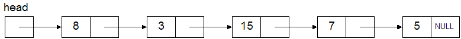
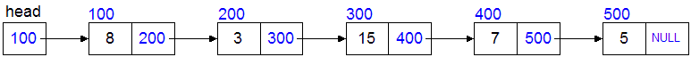
When the compiler encounters a structure member, it must know the size of the member. Since the size of all pointers is known at compile time, the code above is completely sane and legal. (Also, the compiler already knows what a Node is.)
This example code:
could be visualized as this:// #1 Declare 3 structs Node A, B, C; // #2 Set the 'data' portions of the nodes A.number = 10; B.number = 20; C.number = 30; // #3 Connect (link) the nodes together A.next = &B; // A's next points to B B.next = &C; // B's next points to C C.next = 0; // Nothing follows C
After #1
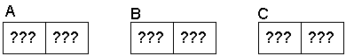After #2
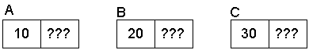After #3
With arbitrary addresses
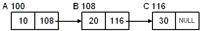The "problem" with this approach, is that we are declaring (and naming) all of the nodes at compile time. If we wanted to read a list of 30 integers from a file, we'd need to declare 30 Node structs. We're worse off than with arrays.
Notice from the diagram that naming struct B and C is redundant. Also remember that we don't "name" our individual elements of an array. We refer to them by supplying a subscript on the array name:
This principle of "anonymous" elements will apply to linked lists as well:int numbers[30]; // 30 "anonymous" elements numbers[5] = 0; // We don't have a "name" for the 6th element
printf("%i\n", A.number); // 10
printf("%i\n", B.number); // 20
printf("%i\n", C.number); // 30
printf("%i\n", A.number); // 10
printf("%i\n", A.next->number); // 20
printf("%i\n", A.next->next->number); // 30
Node *pNode = &A; // Point to first node
while (pNode)
{
printf("%i\n", pNode->number); // Print data
pNode = pNode->next; // "Follow" the next pointer
}
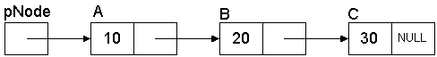
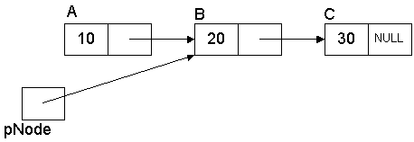
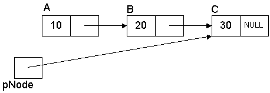
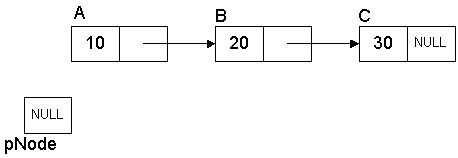
Problem Revisited
Let's revisit the original problem of reading an unknown number of integers from a file:
| Array | Linked list |
|---|---|
|
|
int main(void)
{
Node *pList = 0; // empty list
// 1. Open a file for reading
FILE *fp = fopen("numbers.txt", "rt");
// 2. While there are more numbers in the file
while (!feof(fp))
{
Node *pNode;
int number;
// A. Read next integer from the file
if (fscanf(fp, "%i", &number) == 0)
break;
// B. Allocate a new node struct (same for all nodes)
pNode = new Node;
pNode->number = number; // Set the number
pNode->next = 0; // Set next (no next yet)
// C. Add the new node to the end of the list
// If the list is NULL (empty), this is the first
// node we are adding to the list.
if (pList == 0)
pList = pNode;
else
{
// Find the end of the list
Node *temp = pList;
while (temp->next)
temp = temp->next;
temp->next = pNode; // Put new node at the end
}
}
// 3. Close the file
fclose(fp);
print_list(pList); // Display the list
return 0;
}
Note these two sections especially:
Creating a new node for each element of data (number in the file):
Adding the new node to the end of the list:// Allocate a new node struct (same for all nodes) pNode = new Node; pNode->number = number; // Set the number pNode->next = 0; // Set next (no next yet)
// If the list is NULL (empty), this is the first
// node we are adding to the list.
if (pList == 0)
pList = pNode;
else
{
// Find the end of the list
Node *temp = pList;
while (temp->next)
temp = temp->next;
temp->next = pNode; // Put new node at the end
}
Also note the print_list function used above:
void print_list(Node *list)
{
while (list)
{
printf("%i ", list->number);
list = list->next;
}
printf("\n");
}
Also note that this very simple example does not do any error handling, especially the condition where new fails. In Real World™ code, you would need to have code that handles the case when new fails and deal with it accordingly.
Adding Nodes
Let's address the last two points now. First, this one: "The time it takes to add a node to the end of the linked list takes longer as the list grows."This is simply because we are adding to the end and we don't have any immediate (random) access to the end. We only have immediate access to the first node; all of the other nodes must be accessed from the first one. If the list is long, this can take a while.
Solution #1: Maintain a pointer to the last node (tail).
We add a variable to track the tail:
Node *pList = 0; // empty list Node *pTail = 0; // no tail yet
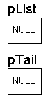
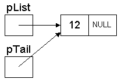
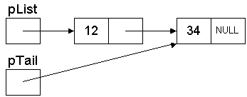
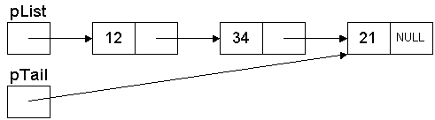
Solution #2: Insert at the head of the list instead of the tail. This is simpler yet. This has the "feature" that the items in the list will be reversed.
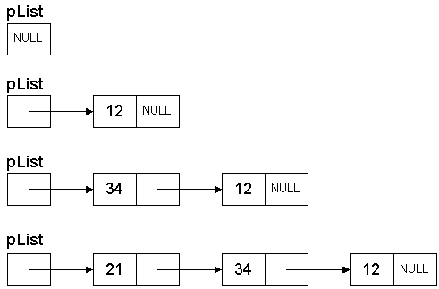
Freeing Nodes
Up until now, we haven't deleted any of the nodes. Since we called new for these nodes, we have to call delete when we're through. This is straight-forward using another while loop:
while (pList)
{
Node *temp = pList->next;
delete pList;
pList = temp;
}
Notes thus far:
Creating Functions
The code that was shown thus far manipulates all of the nodes in the list directly. What this means is that the lists were not "passed" to another function to do the work. In real code, you would create functions to do things such as AddToEnd, AddToFront, DeleteFront, FindItem, etc. The reason to do this is simple: we want to be able to re-use the functionality so that we can perform these operations on any list.However, there is a slight caveat. Something that we've discussed many times before but still confuses many new programmers: Passing a pointer to a function. Remember these points about passing parameters to functions:
This means that, instead of passing the head node to the function, we need to pass a pointer to the head node to the function. This will allow the function to change what the head pointer will point at.
So, a function to add a node to the head of a list would be prototyped something like this (assuming a linked list of integers):
// Adds a node to the front of the list void AddToFront(Node **ppList, Node *pNode);
void AddToFront(Node **ppList, Node *pNode)
{
// The new node's next pointer will point at the first node
pNode->next = *ppList;
// Now, the head pointer points at the new node, which is now at the front.
// Notice that we are dereferencing the pointer to modify the original head pointer.
// The client passed in the address of the head pointer so we could change it.
*ppList = pNode;
}
There is nothing fancy or weird or exotic about passing pointers to pointers. The only way a function can change the original data is if it receives a pointer to the data. If the data happens to be a pointer itself, then a pointer to the pointer must be passed in order to change it. This is why some of the linked list functions must pass pointers to pointers to nodes.
Doubly Linked Lists
A doubly linked list is a list that has two pointers. In addition to the next pointer, it has a previous pointer. This allows you to traverse the list in both directions.An example node structure for a doubly linked list:
struct Node
{
int number; // data portion
struct Node *next; // node after this one
struct Node *prev; // node before this one
};
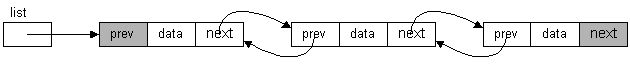
Compared with singly linked lists, double linked lists:
To summarize, linked lists:
Why not do away with arrays and use linked lists for all lists?